I found myself looking for a bakery to get a cake for my parents on the 24th December 2020 at a mall complex near Rajouri Garden.
The cluster of shopping malls housed a bunch of malls owned by infrastructure conglomorates: MGF, the Landmark group, the TDI group, Epicuria et al.
They all arrived on the scene somewhere in mid 2005 and reached their peak attendance somewhere around 2012 after which it has been a slow decline into irrelevance and decay with changing hot spots for shopping that intends to associate with an image of luxury and status, instead of the middle class which resides in and around rajouri and also frequents said malls.
Something that a contracted economy is good for - urban exploration and dead mall diving in decrepit, desolate, decaying malls and places now poorly maintained and abandoned. Here are some pictures from a few in rajouri that were quite popular and thriving in 2010 but now, due to any absence of people or storefronts in them, stand out more for their architectural quirks and the opportunity they provide in exploring them as a non-consumer.
Most local businesses were shut. Only american fast food chains survived and were open.
<*- go HOME
It would be a damn shame if you saw these pictures without listening to mall music in the background
The playground (not the front view). The building in light pink on the left and light yellow on the right are the two malls I visited - mostly empty thankfully.
 And here are the pictures from this weird little trip of 'urban exploration':
INSIDE
And here are the pictures from this weird little trip of 'urban exploration':
INSIDE
 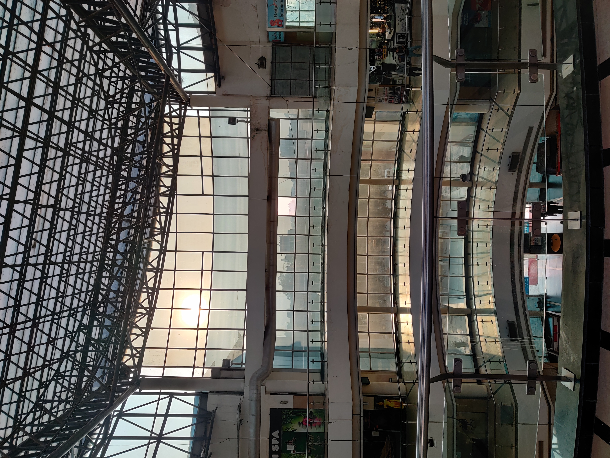
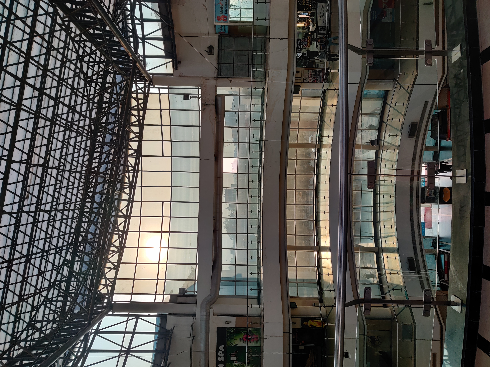


 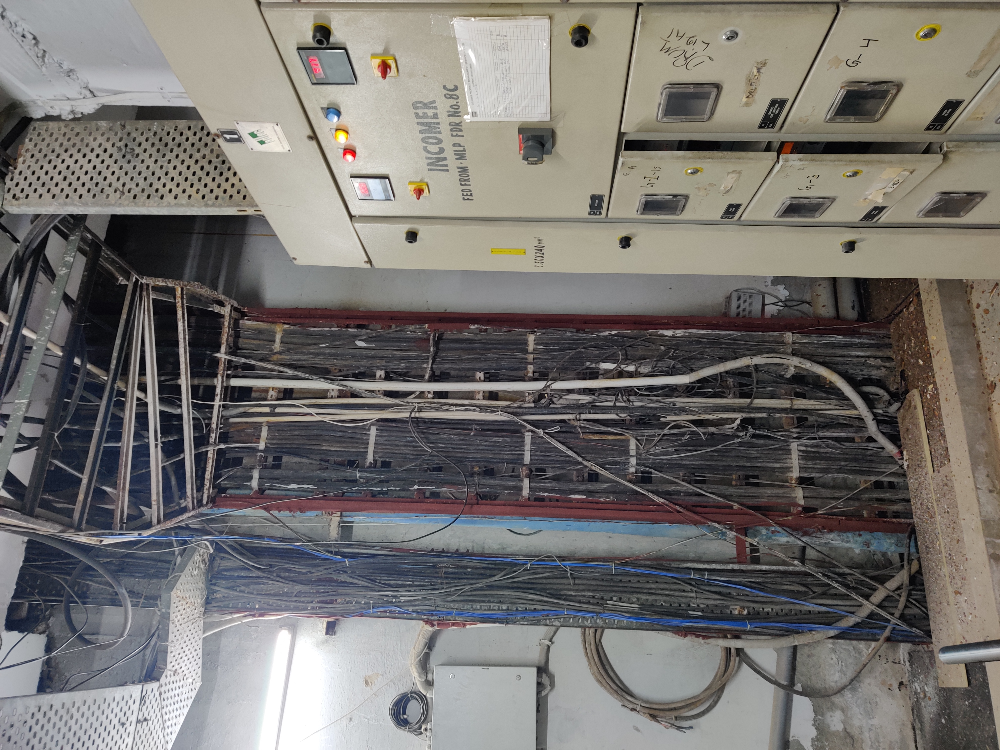
Fire Exit
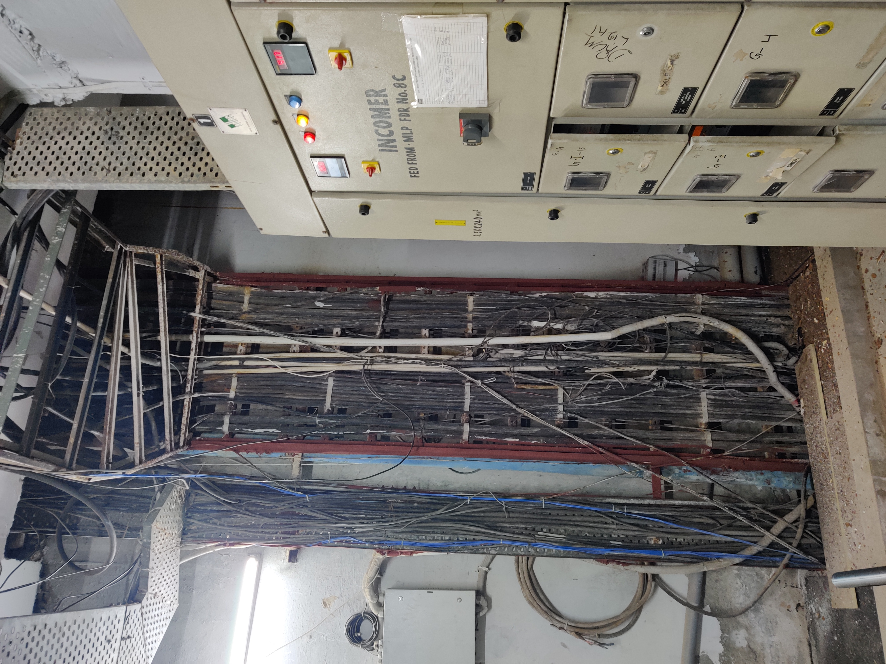
Fire Exit


 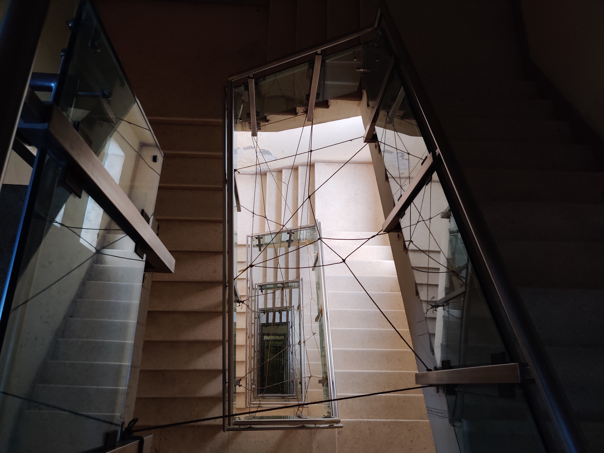
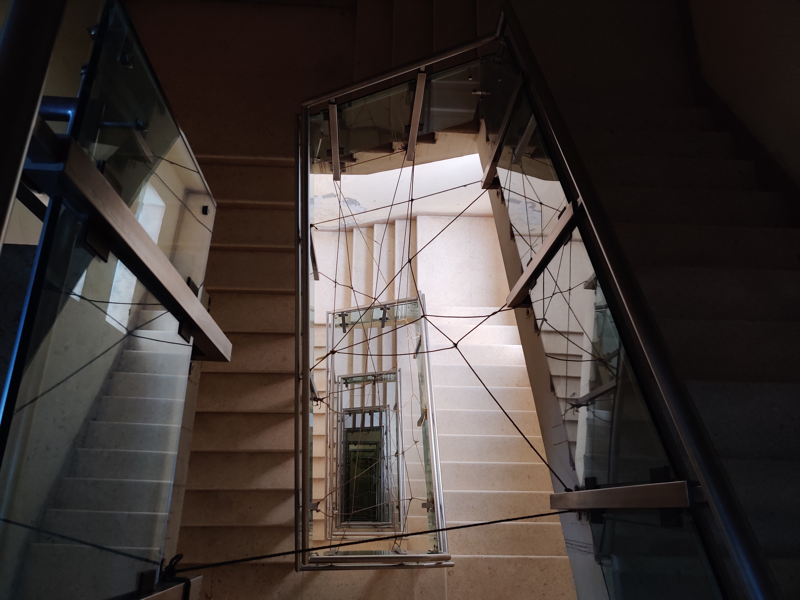
 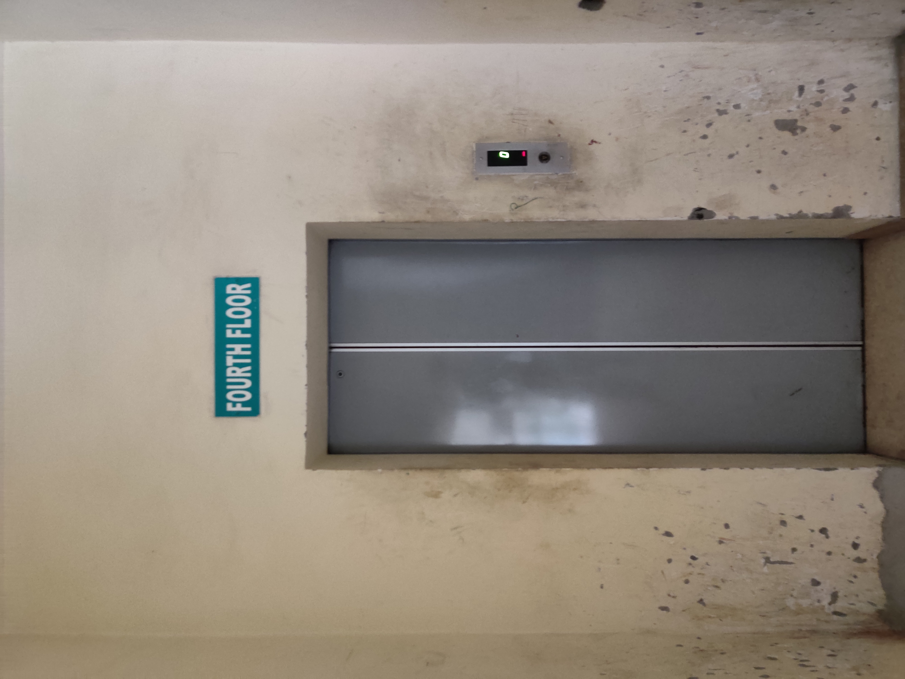
Leading to the ROOF:
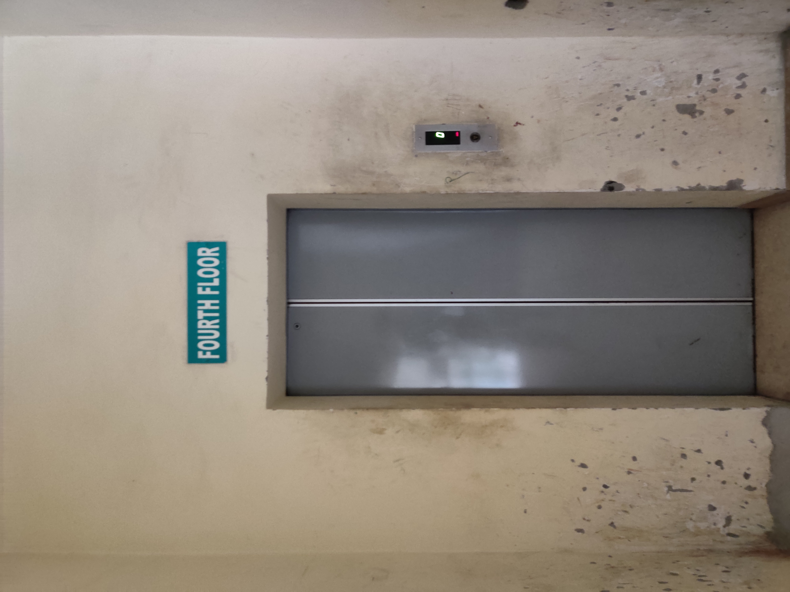
Leading to the ROOF:


 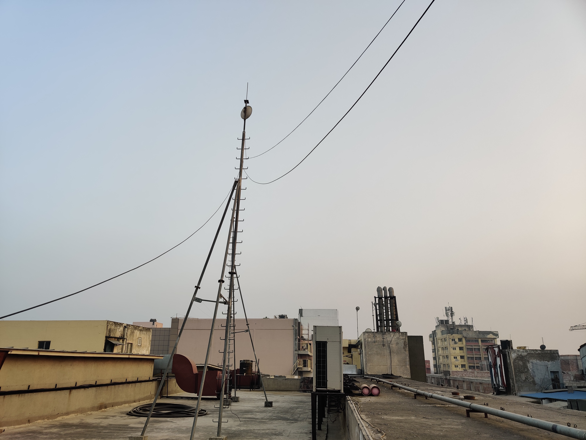
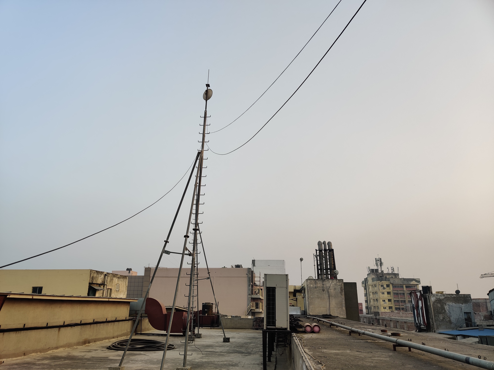


DEAD MALL 2:


DEAD MALL 3:
 Greenery!
Greenery!


Outside:
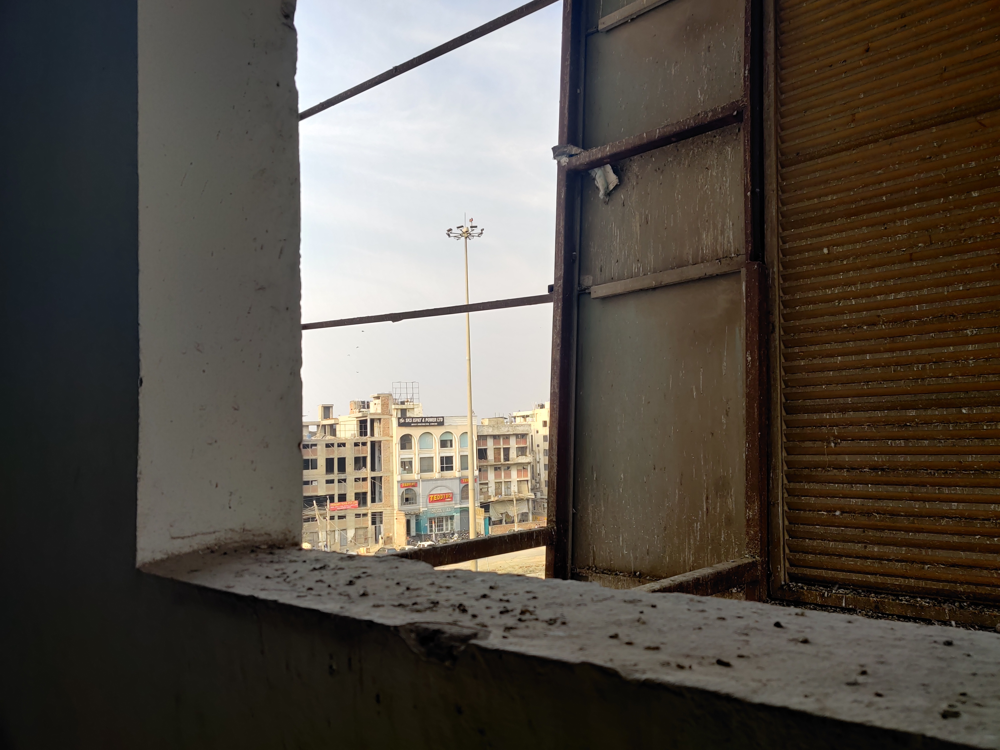
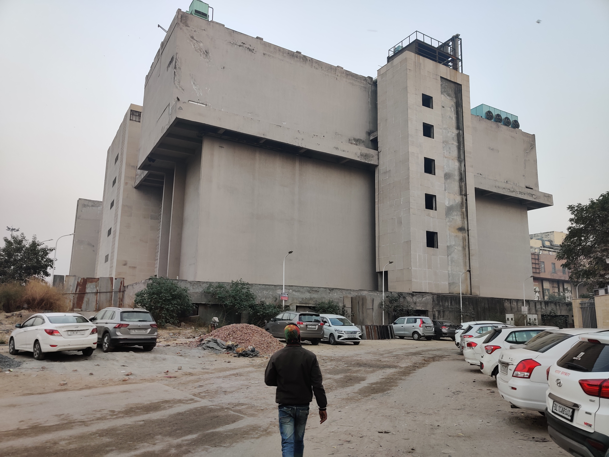
Taken by this awkward idiot who doesn't know how to look at cameras:
<*- go HOME